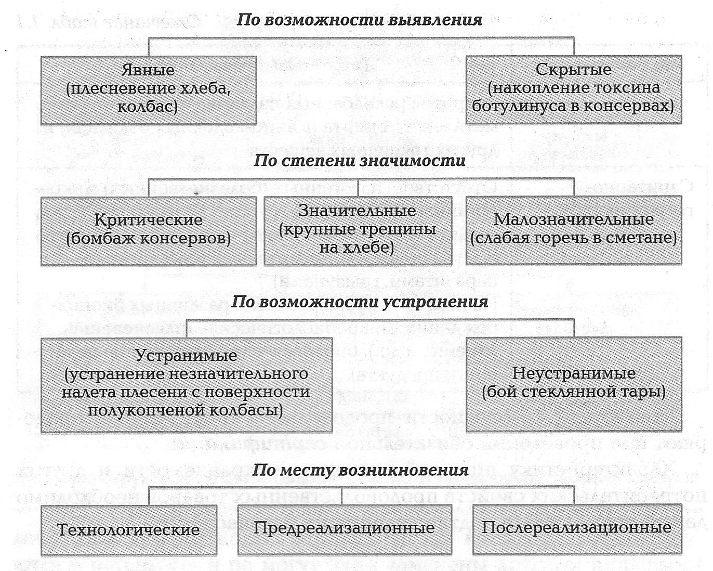
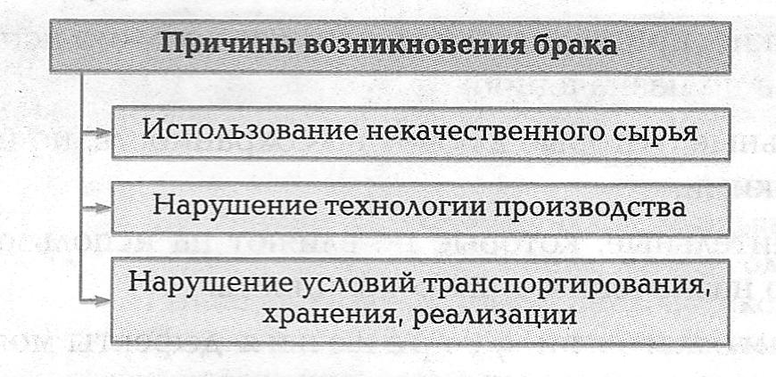

1.1.2. Дефекты и брак продовольственных товаров
Дефект — это несоответствие товара установленным требованиям.
Дефектный товар — товар, имеющий хотя бы один дефект.
Повозможности выявления дефекты могут быть (рис. 1.4): явными, для выявления которых предусмотрены правила, мтоды, средства; скрытыми, для выявления которых не предусмотрены правила, методы, средства.
рис. 1.4

Постепени значимости различают дефекты:
- критические, при наличии которых невозможно использование продуктов по назначению;
- значительные, которые влияют на сохранность, но не являются критическими;
- малозначительные, которые не влияют на использование продуктов по назначению и их сохранность.
Повозможности устранения дефекты могут быть:
- устранимыми (дефекты, устранение которых возможно и целесообразно);
- неустранимыми (дефекты, устранение которых невозможно или нецелесообразно).
По месту возникновения различают дефекты:
- технологические;
- предреализационные;
- послереализационные.
Брак — продукция, передача которой потребителю не допускается из-за наличия дефектов (например, загрязненный или проросший кочан капусты).
Причины возникновения брака продовольственных товаров могут быть различными (рис. 1.5).
рис. 1.5

Выделяют следующие виды брака:
- исправимый, если дефект можно устранить, например зачистить загрязненный кочан капусты;
- неисправимый, если есть хотя бы один неустранимый дефект, например проросший кочан капусты.
▲ НАВЕРХ ▲
► К следующему подразделу 1.1.3